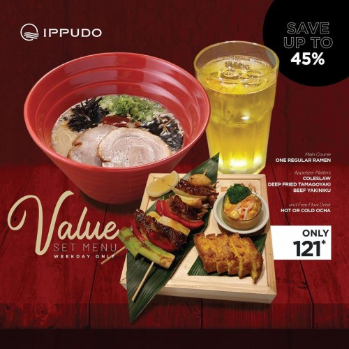
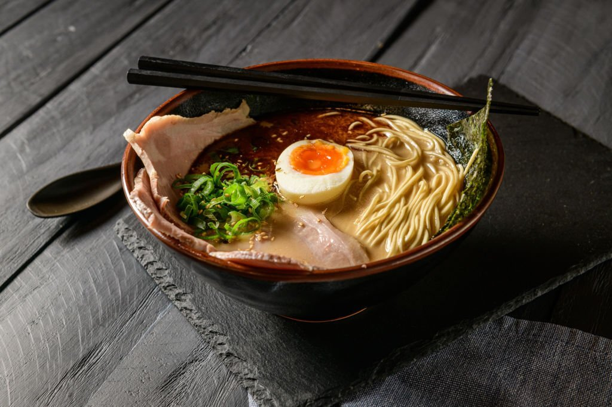
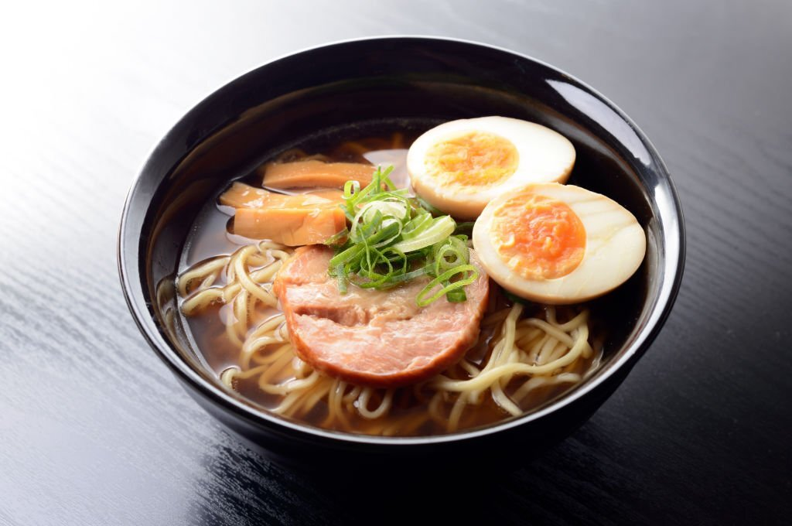

Shouyo Ramen is a Japanese dish that is famous for its delicious broth and a variety of appetizing toppings.
Shouyo Ramen

30 min •

4.9

Tonkotsu Ramen is a Japanese ramen dish famous for its thick, fatty broth made from long-cooked pork bones.
Tonkatsu
30 min •
4.9
Shio Ramen is a variant of Japanese ramen which is famous for its soft and salty broth.
Shio Ramen
30 min •
4.9
Curry Ramen is a delicious combination of Japanese ramen and the rich taste of curry.
Curry Ramen
30 min •
4.9

Hiyashi Chuka is ramen served cold, perfect for summer. Ramen noodles and various toppings served with a refreshing dipping sauce
Hiyashi Chuka
30 min •
4.9

Kimchi Ramen is a delicious blend of Japanese ramen flavors with a Korean twist.
Kimchi Ramen
30 min •
4.9